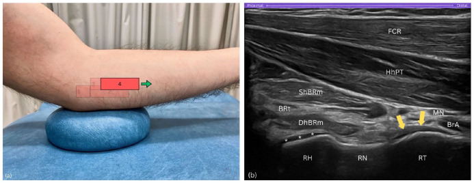

Respuesta clínica corta
¿Cómo localizar el tendón distal del bíceps desde una ventana medial?
Se encadenan epicóndilo medial, coronoides, cabeza, cuello y tuberosidad radial, terminando con un pivote que alinea el tendón en eje largo.
Dato claveCinco pasos · propuesta técnica, no validación diagnóstica
El arco radial ofrece una ruta medial reproducible para encontrar la tuberosidad radial y alinear el tendón distal del bíceps, pero todavía necesita estudios de fiabilidad y precisión antes de considerarse superior.
Observado
Qué encontró y cómo interpretarlo
La publicación propone una ruta didáctica, no compara su rendimiento con otras ventanas.
La frase de mejora diagnóstica debe interpretarse como hipótesis de los autores.
Atlas del artículo
Imágenes para entender el procedimiento
Estas figuras proceden del artículo original y se reproducen con licencia abierta verificada. Se muestran por su utilidad anatómica o técnica, no como prueba aislada de diagnóstico o eficacia.

El cuarto paso alinea cabeza, cuello y tuberosidad radial y muestra el tendón distal del bíceps sobre la tuberosidad.
Cómo leerlaEs una demostración técnica seleccionada y no prueba sensibilidad, especificidad ni superioridad frente a otras ventanas.
Daoukas y Galanis, Figura 6 del artículo original · Fuente · Licencia CC BY.
Procedimiento del artículo
Técnica del arco radial en cinco pasos
La secuencia usa referencias óseas sucesivas para atravesar la ventana del pronador redondo y obtener un eje largo del tendón distal del bíceps con posibilidad de pronosupinación dinámica.
- Abordaje
- Medial, a través de la ventana del pronador redondo
- Transductor
- Lineal ML6–15 MHz en el artículo
- Dinámica
- Pronación y supinación al final del recorrido
- 01
Epicóndilo medial
Iniciar en eje largo sobre el epicóndilo medial y reconocer el tendón flexor común.
- Referencias
- Epicóndilo medial, tendón flexor común y ligamento colateral medial.
- Lectura
- Establece una referencia superficial antes de desplazarse hacia estructuras profundas.
- 02
Coronoides y cabeza radial
Deslizar distalmente hasta la coronoides y barrer anteriormente aumentando la profundidad.
- Referencias
- Tróclea, coronoides, cabeza radial y cartílago hialino.
- Lectura
- La cabeza radial confirma que el barrido ha entrado en el arco correcto.
- 03
Construir el arco
Continuar distalmente hasta alinear cabeza, cuello y tuberosidad radial.
- Referencias
- Cabeza como colina, cuello como valle y tuberosidad como segunda colina.
- Lectura
- Las flechas tendinosas deben seguirse sin perder la arteria braquial y el nervio mediano.
- 04
Pivotar al tendón
Mantener el extremo distal y elevar aproximadamente 15° el proximal para alinear el tendón.
- Referencias
- Tuberosidad radial y dos cabezas del tendón distal.
- Lectura
- La pronosupinación ayuda a confirmar continuidad y deslizamiento.
Protocolo reconstruido de forma prudente desde el texto completo y las figuras del artículo; sirve para comprender la adquisición y no sustituye formación, supervisión ni un proceso diagnóstico completo.
Aplicabilidad
Qué significa clínicamente
Usar las referencias óseas como puntos de control.
Confirmar el tendón en dos planos y con dinámica antes de describir una lesión.
Límite
Qué no permite afirmar
Sin cohorte clínica ni estándar de referencia.
Sin estudio formal de fiabilidad.
Imágenes obtenidas por operadores expertos.
Contexto
¿Se parece a tu paciente?
- Población estudiada
- Demostraciones anatómicas y ecográficas del tendón distal del bíceps; no se evaluó una muestra clínica consecutiva ni reproducibilidad entre operadores.
- Diseño
- Ensayo pictórico y propuesta técnica en cinco pasos
- Resultado evaluado
- Reproducibilidad conceptual de la secuencia de cinco pasos
Fuente primaria
Lee el estudio, no solo nuestro análisis
Daoukas S, Galanis D. The Radial Arc technique: A systematic ultrasound method to imaging the distal biceps brachii tendon from a medial approach with anatomical insights. Ultrasound. 2025;33(4):327-335. doi: 10.1177/1742271X251337389
Responsabilidad editorial
Francisco José Extremera García
Fisioterapeuta colegiado ICPFA 4288 · Osteópata D.O.
Creador y responsable editorial de FisioLógico
- Última revisión
- Conflictos de interés
- Ninguno declarado.